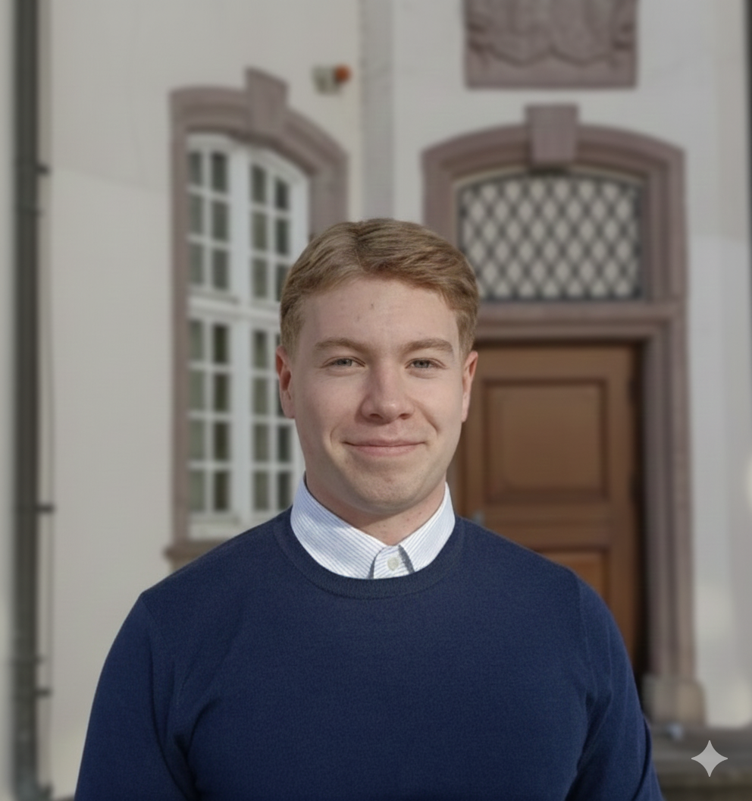

CV David Stiel

Education
Jakob Grimm Schule - Abitur
Rotenburg an der Fulda, Hessen | 09.21 - 06.24
- Grade 1.3
- Edvanced Courses: Physics, Politics & Economics
Universität Mannheim - B.Sc. Business Informatics
Mannheim, Baden-Württemberg | 08.25 - 07.28
- Current Grade 1.6
- Relevant Modules: Praktische Informatik, Programmierpraktikum (Java), Wirtschaftsinformatik
Work Experience
German Armed Forces (CIR) - IT-Soldier
Gerlostein, Erfurt | 08.24 - 07.25
- Top of Class specialised IT-Soldier training
- Admministration and Overseing of digital Communication Lines
Norma Lebensmittel GmbH & Co KG - Temporary retail assistant
Rotenburg a.d.F. | 06.22 - 07.24
- Assistance in daily business and customer contact
- Reliability and daily team-organisation
Engagement
Projects & Certificates
IT Skills & Languages
- Programming languages: Python (MatplotLib, Pandas, Seaborn) - Focus on Data Analytics, Java - Basic through studies
- Tools: Git/Github, MS Office, Jupyter
- Languages: German (native), Englisch (fluently)